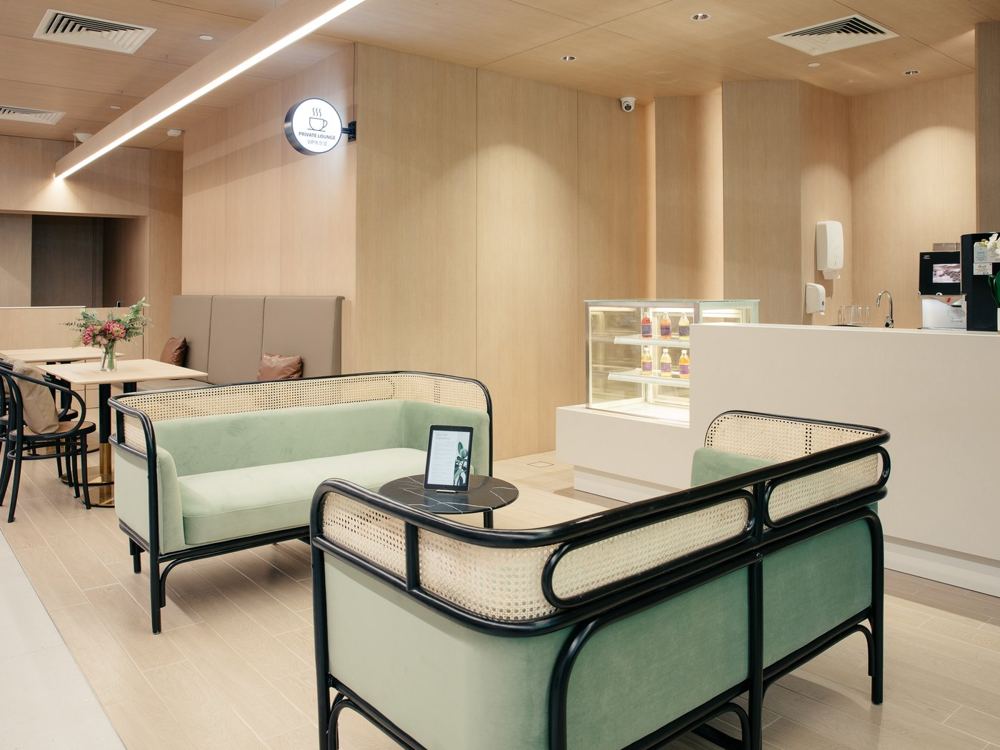

Precision Technology
A modern linear accelerator and the full suite of advanced radiation and oncology therapies, with sub-millimetre accuracy.
Explore our oncology treatments →
AARO is a Singapore-based specialist radiation oncology practice — an independent group of sub-specialised oncologists caring for patients across a wide range of cancers.

Hypofractionated regimens, partial-breast irradiation and survivorship pathways — led by a sub-specialist who stays with you from first consult onwards.
Three reasons patients and referring doctors choose us — each links through to where you can read more.
A modern linear accelerator and the full suite of advanced radiation and oncology therapies, with sub-millimetre accuracy.
Explore our oncology treatments →Each oncologist sub-specialises in specific cancers. You see the same consultant from first consultation onwards.
Meet our doctors →An honest, independent assessment of your diagnosis and options — in plain language, with time for your questions.
Request a second opinion →You'll meet the consultant who leads your care from your first consultation — the same person, every visit.
Visiting consultants to be listed here — names TBC (per client doc).
A focused selection of the advanced therapies we provide. See the full suite of oncology solutions for everything we offer.
Treatment delivery happens at our flagship Centre for Stereotactic Radiosurgery on Adam Road. Consultations are also available at five partner hospitals across Singapore.

Our primary treatment facility, equipped with a modern linear accelerator and precision positioning system used for SBRT, SRS, VMAT and IMRT. Private lounge, dedicated care team.
Visit our facility→Every story shared here is a patient's own — in their words, with their permission.
Oscar Lim, 21 — Stage 4 sarcoma with lung metastases, treated by Dr Daniel Tan
Full story pagePak Tjugito Naslim — Stage 2 prostate cancer, treated by Dr David Tan
Full story pageHelen Yow — Papillary squamous cell carcinoma, treated by Dr Daniel Tan
Full story pageClinic updates, patient education and community events across our social channels.